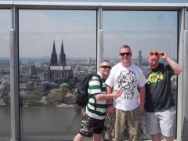

JT6 Round up from the new Bhoy !
Dazzler are u up for abit of jimbo tours ? We need a fresh face to lead from the front and as your famous for attacking the ramp your just whats needed ! That was the text jimbo sent me at the start of April and it was at that very moment my first jimbo tours invite had landed ! That was all i needed to hear. Bang I'm in !
That's how it started for me and JT6 started on a fine summers morning at seven kings station getting the train heading to kings cross via Liverpool street.. The euro star journey was where the plans were getting laid out for the next few days or should i say lack of plans. There was no WI fi on the train and to say jimbo was disgusted would be a understatement but jimbo rallied the troops regardless and told me the rules and what was expected of me over the next few days.
I was never in Germany before JT6 and it was never really a place i considered going unless the famous Celtic had drawn a German team in Europe but to say i had been missing out was a understatement, Jimbo had been preaching about Germany for ages and now i know why. The food & drink is superb and the way of live is very laid back and when the sun is out everyone seemed to just go to the park and have a proper blow. Cologne was great craic and its where Shaun introduced me to a game of finger spoof ! I'm now a proper judge at it and rarely lose. Give credit to Shaun he was always up for it the whole trip and that was still the case after Stevie b nearly broke his toes by slamming the door to the hostel across his bare feet, even though he did squeal like a pig he stood firm and carried on with another shot of jager !
Eindhoven............This is where the party really started. Doing a monster pub crawl around this town is the way forward and had to be done. Jimbo marched the team over the small bridge that leads into the main drag and it was there in and amongst the 55 bars games of finger spoof was won and lost with many a jager downed by the loser which was mainly jimbo followed in closely by Stevie b. After a heavy session Stevie b had hit the wall just like he used to do back in the old days around the pubs of ilford and so he was sent back to the hostel to look after the bags and make sure no one half inched our clobber. That left me, jimbo and Shaun with no other option but to attack the spinning wheel in the early hours and try return home as hero's with our pockets full of fifty euro notes ! It didn't quite work out like that and at one stage it looked like 1 or 2 of the boys ( no names mentioned ) were gonna have to get air ambulanced out of there.......it was carnage, a Tommy nug, a train wreck, a nightmare, call it what u like but it wasn't pretty, but after all 3 of us holding our nerve we got out alive and to be fair jimbo nearly pulled off the biggest gambled landed since the famous flame of hope graced the golden sand track of Romford !
My first jimbotours may of only been afew days but it had value in abundance and that's what matters in these testing economic times. Stevie b as always was good craic and has stood the test of time when it comes to jimbotours. Shaun is like myself, he knows his way to the ramp and ain't afraid to drop onto the odd cheeky cocktail at the end of the night but to be fair i wouldn't mind being his bookmaker coz hes a terrible judge. And then Jimbo.....take a bow kid, he pulled the strings the whole trip and to my astonishment even found his way to the ramp on afew occasions !
Overall score 8/10
Photographs
{kind=link}
